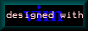

URL: http://www.math.fu-berlin.de/~guckes/vim/pics.html
URL: http://www.vim.org/pics.html (mirror)
Created: Sat Jun 29 00:00:00 MET 1996
Last update: Tue Nov 17 17:17:17 CET 1998
VIM Pictures - Buttons, (Animated) Icons, and Screenshots
Vim Pictures - Overview
Icons and Logos
| Screenshots
| Links to other pictures on the net
| Page History - What's New?
Vim - Icons and Logos
- Edited with Vim
- Size: 1199 bytes
- Creator: Marco Lamberto lm@geocities.com [981111,981117]
- Notes: Red background. Nice and small.
- Just VIM it! (This page is Vim POWERED!)
- Size: 6456 bytes
- Creator: Adrian Nagle anagle@ball.com [981105]
- Notes: Nice. :-)
- Just VIM it! (click here)
- Size: 6737 bytes
- Creator: Adrian Nagle anagle@ball.com [981104]
- Notes: Nice. :-)
- "Vi Vimproved" [2895 bytes]
- Creator: Prabhanjan M prabham@prithvi.siliconsystems.co.in [981001]
- Notes: Nice. :-)

- Designed with Vim" [1501 bytes]
- Creator: (damn, I forgot) [980622]
- Notes:
Black button with a dark blue "vim" on the white text "designed with".
- "Vim Hot Icon" [299 bytes]
- Creator: Vince Negri vn@aslnet.demon.co.uk [980216]
![[picture: This site vim powered (411 bytes)]](../gifs/vim_this_site_vim_powered.gif)
- "This site vim powered" [411 bytes]
- Creator: Cade, Philippe phc@gmx.net [971127]
![[picture: This site vim powered (546 bytes)]](../gifs/vim_powered_logo.gif)
- "This site vim powered" [299 bytes]
- Creator: Kristine Budde budde@inf.fu-berlin.de [980721]
- "This site is powered by vim" [4885 bytes]
- Creator: Digital Puer digital_puer@hotmail.com [970828]
Links to other pictures on the net
- Vim on Olaf's Desktop [971216]
- URL:
http://www.polderland.nl/~rhialto/be/vim-5.0s-screen1.gif (71K)
- Author:
Olaf Seibert rhialto@polder.ubc.kun.nl
- Vim on Jano's Desktop [970919]
- URL:
http://www.wi.leidenuniv.nl/~jvhemert/desktopb.jpg
- Author:
Jan van Hemert jvhemert@wi.LeidenUniv.nl
- There's Vim on his desktop - try to spot it! ;-)
Send screenshots and comments to
Sven Guckes
guckes@vim.org
* Snipped by pottsdl on 01-Dec-98 13:41